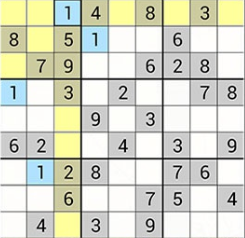

Regles i funcionament del Sudoku
El joc consisteix en omplir les cel·les buides amb un número d'entre 1 i 9, de manera que
a una mateixa fila, columna i regió (caixa de 3x3) no es repeteixi cap número.
- Per omplir una cel·la, selecciona-la prement en ella.
- Quan la seleccionis, la fila, la columna i la regió en la que està canviaran de color.
- Quan seleccionis un número, aquesta cel·la i totes les que tinguin el mateix nombre també canviaran de color.
Aquí teniu un exemple de la pantalla de joc:
